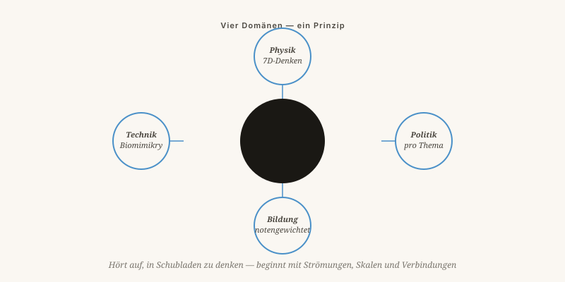

Wie alles zusammenhängt
Ein Faden durch sieben Themen: Hören Sie auf, in Schubladen zu denken, beginnen Sie, in Strömungen, Maßstäben und Zusammenhängen zu denken.
Von Jacobus van Merksteijn · 7 Min. Lesezeit · 23. Mai 2026

Concordia disciplinarum — Einheit der Fächer
Derselbe Fehler in vier Gestalten
Liest man diese Ausgabe von oben, sieht man einen Faden. Gleichgültig, ob das Thema Parteipolitik, Bildung, Kernfusion oder Schiffsbeschichtungen ist — der Fehler ist immer derselbe, und die Lösung auch.
Der Fehler: In Schubladen, Maßstäben und Jahres-voraus-Rechnungen denken.
Die Lösung: In Strömungen, Dimensionen und Generationen-voraus-Rechnungen denken.

Vier Fachgebiete, eine Struktur
Schluss mit Schubladen, anfangen mit Strömungen
Mehr Dimensionen wagen
Maßstab, Wert und Vielfalt als echte Achsen — nicht als Nebensache. Dunkle Materie als Maßstabsproblem, nicht als neue Stoffart.
Themenspezifisch entscheiden
Messbares Preis-Leistungs-Verhältnis, unabhängige Kontrolle, 24 Politikbereiche je mit einem eigenen Kreislauf. Keine Paketabstimmungen mehr.
Ergebnis belohnen
Finanzierung nach Durchschnittsnote, nicht nach Bestehensquote. Risiko zurück in die Kindheit. Freiheit für Schulen, anders zu sein.
Von der Natur lernen
Biomimikry als ernsthafte Ingenieurdisziplin. Vortexreaktor, Haifischhautfolie, selektive Wärmeabweisung. Nicht dagegen — damit.
Andere Oberfläche
Bewuchs durch Transparenz und Einfachheit verhindern, nicht durch nachträgliche Besteuerung. Parasitismus gleitet von einem glatten System ab.
Revolutionäres Denken
Revolution hier nicht als Umsturz, sondern als Umkehrung: von einem Standpunkt aus schauen, den noch niemand eingenommen hat. Galileo schaute von der Sonne aus. Darwin von der Variation. Einstein vom Licht aus. Alles Menschen, die nicht tiefer dachten als ihre Zeitgenossen — sie schauten von einer anderen Seite.
„Eine Zeitung ohne Diskussion ist eine Predigt. Hier kann das nicht sein."
In kommenden Ausgaben arbeite ich jedes Thema weiter aus. Aber die Wahl, welches Thema zuerst zurückkommt, liegt bei Ihnen. Reagieren Sie, widersprechen Sie, tragen Sie bei. Bis nächsten Monat.
Wie alles zusammenhängt
Ein roter Faden durch sieben Themen: Schluss mit dem Schubladendenken — denken Sie in Strömungen, Maßstäben und Zusammenhängen.
Liest man diese Ausgabe von oben, erkennt man ein einziges Muster. Der Fehler ist in jedem Fachgebiet derselbe: Denken in Schubladen, Maßstäben und kurzfristiger Rechnung. Die Lösung ist ebenfalls stets dieselbe: Denken in Strömungen, Dimensionen und generationsweiter Rechnung.
In der Physik versuchen wir, das Universum mit vier Dimensionen zu erklären, und geraten bei Dunkler Materie in Schwierigkeiten — mehr Dimensionen zu wagen, G, W und N, löst das. In der Politik bündeln wir hundert Themen zu einer Stimme und kommen in die Bredouille, weil keine Partei der tatsächlichen Kombination von Überzeugungen entspricht — themenweise zu entscheiden, löst das. In der Bildung bezahlen wir Schulen je Abschluss und geraten in Schwierigkeiten, weil der Abschluss dadurch weniger wert wird — für Ergebnisse zu zahlen, löst das. In der Technik versuchen wir, Plasma mit Magneten einzuschließen und Schiffe mit Gift zu schützen — von der Natur zu lernen, löst das.
Galileo schaute von der Sonne aus. Darwin von der Variation. Einstein vom Licht. Alles Menschen, die nicht härter dachten als ihre Zeitgenossen — sie schauten von einer anderen Seite.
Was ich von Ihnen verlange
Reagieren Sie, widersprechen Sie, tragen Sie bei. Die Wahl, welches Thema als erstes in der nächsten Ausgabe zurückkommt, liegt bei Ihnen. „Eine Zeitung ohne Diskussion ist eine Predigt. Hier geht das nicht."